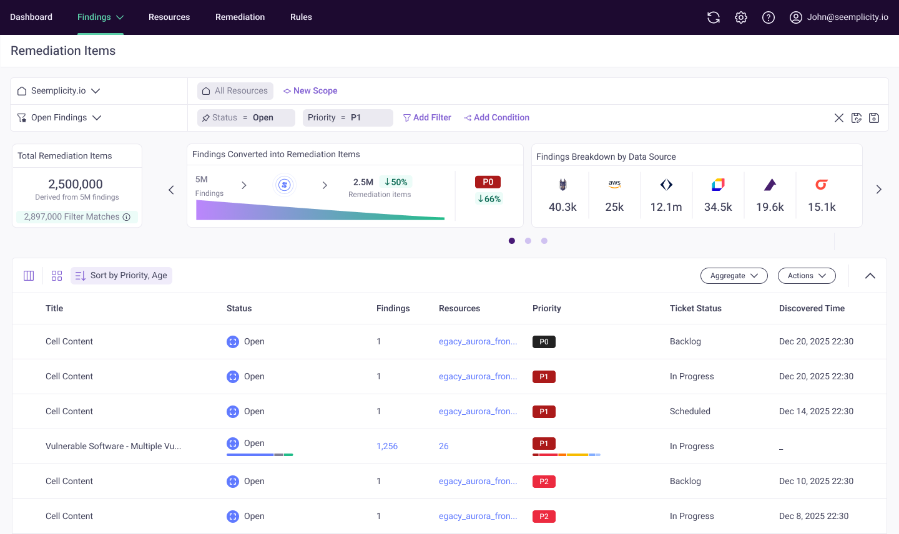
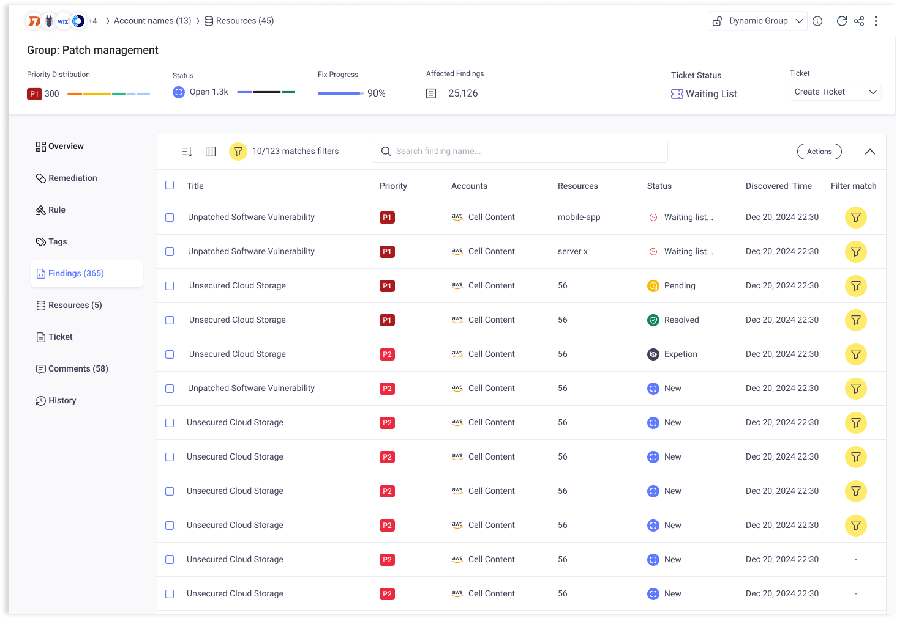
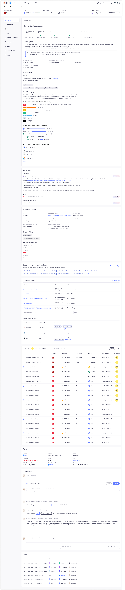
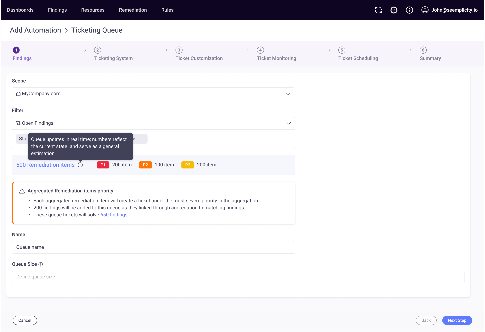
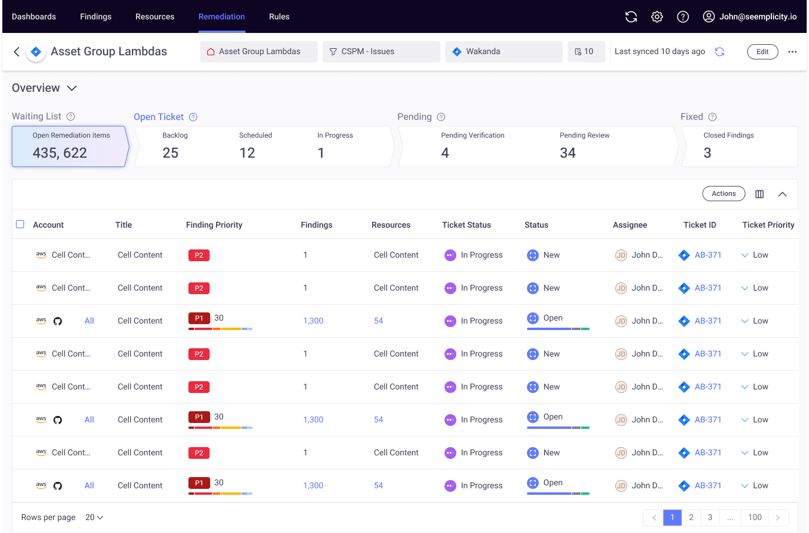

Remediation Items
Findings, aggregated by their remediation.
How findings (and aggregations) work
A single finding is straightforward — one value per attribute. Priority: High · Status: Open.
But surfacing every finding individually creates noise. So Seemplicity bundles similar findings into a single aggregated finding — fewer rows, same information.
Because one aggregation stands in for many findings, its attributes can hold multiple values at once: Priority: Critical / High / Medium · Status: Open / In Progress / Done.
The problem
Aggregation makes the list readable — but the row only shows representative values, not every finding behind it. When users filter, results seem to vanish for no clear reason.
- Merged attributes hide real variance inside a group.
- Dashboards mislead — decisions get made on partial context.
- Hard to fix — the logic ripples across the whole system.
The solution
Reframe the page from “Findings” to Remediation Items, and rebuild the logic underneath it.
- Rework filter calculations so results match what users see.
- Make the new logic transparent — simple on the surface, honest underneath.
- Expand filtering for sharper accuracy and org-level control.




